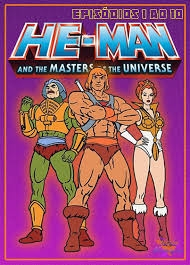
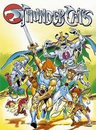
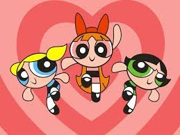

He-Man e os Mestres do Universo
1983
Acompanha as aventuras de Príncipe Adam, que se transforma no poderoso He-Man para defender o castelo de Grayskull do maligno Esqueleto.

ThunderCats
1985
Após a destruição de seu planeta natal, um grupo de felinos humanóides encontra um novo lar e precisa protegê-lo de Mumm-Ra, o de Vida Eterna.

As Meninas Superpoderosas
1998
Três garotinhas com superpoderes que vivem na cidade de Townsville e dedicam suas vidas a combater o crime e as forças do mal.